Gociti! is a platform developed to enable inclusive data-driven decision-making for Shanghai. The concept behind is based on a circular system that connects urban data, the municipality, private companies and citizens.
Gociti! aims to connect urban stakeholders towards active, conscious and relevant decision-making. Understanding the inherent logics of each actor, it sets the framework for private companies to launch, visualize and deploy their products or projects, for the municipality to fund products and projects that they consider appropriate to tackle specific issues of the city, for citizens to engage projects or use products they believe in and for other companies to sponsor the platform.
Gociti can be accessed both digitally and physically. The digital branch contains mainly 3 sections: monitoring shows the performance of the indicators in the form of interactive maps and charts which allow filtering through values real-time comparison; campaigns is the section where private and public companies publish their products, services or initiatives to enable citizens to access and join them. Finally, user account is the personal space for users to check their performance, and share and compare it with their friends. The physical deployment is intended to solve 2 challenges: first, how to convey and deploy real-time information on the public space, to make it easily understandable and interesting to check for all citizens? Second, how to engage people share information about their habits to enrich the Gociti dataset? Of course both questions need to find answers so that all target groups that form the urban environment are properly addressed. Thus, focusing on mobility, a set of proposals has been done addressing drivers, cyclists, public transport users and pedestrians from different ages.
Click here for more information!
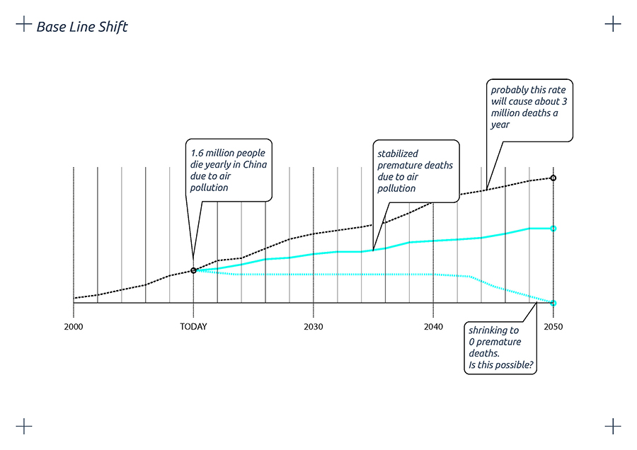
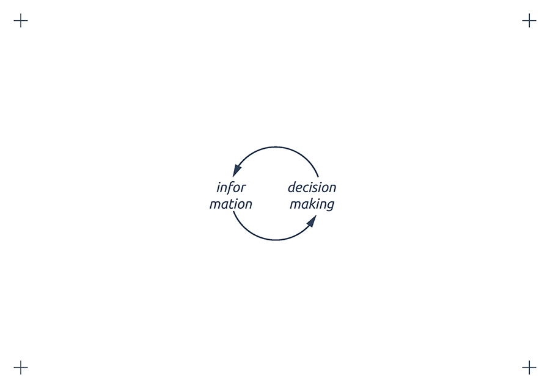
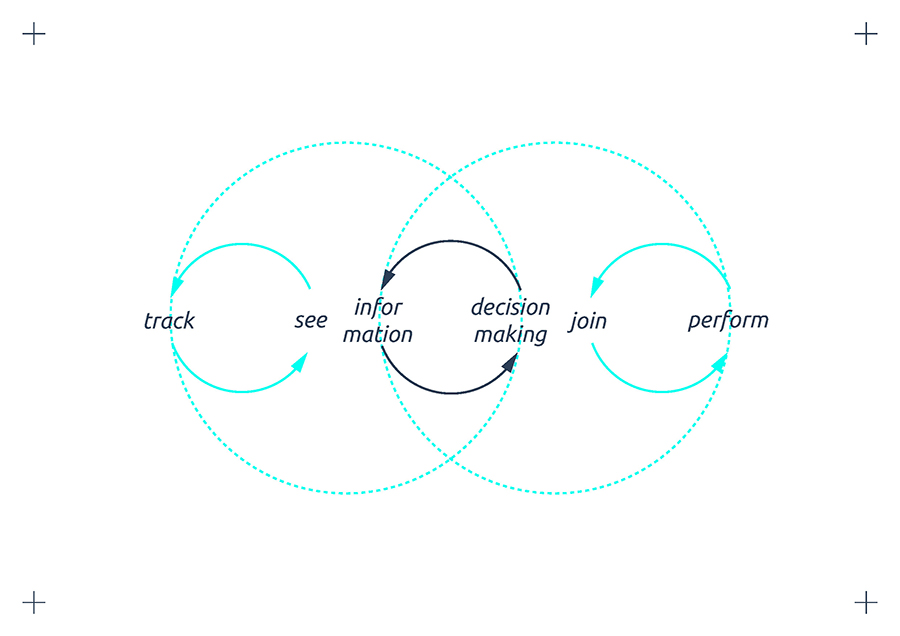
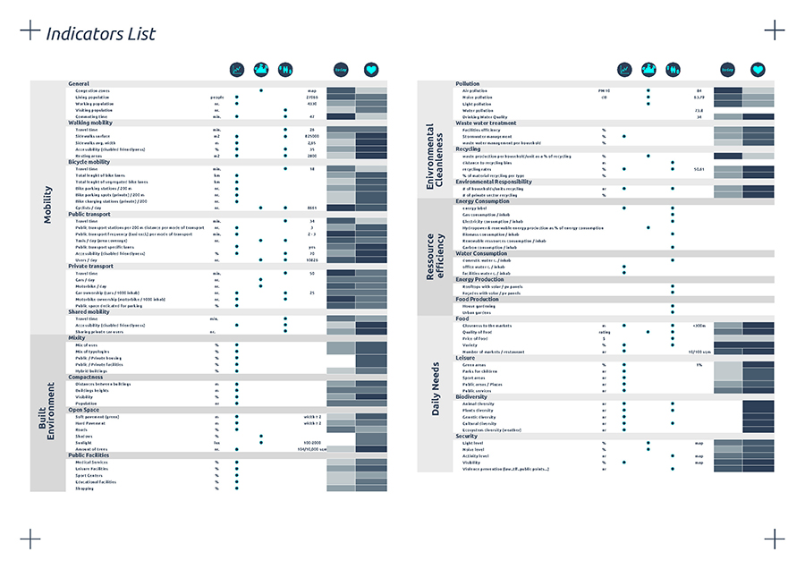
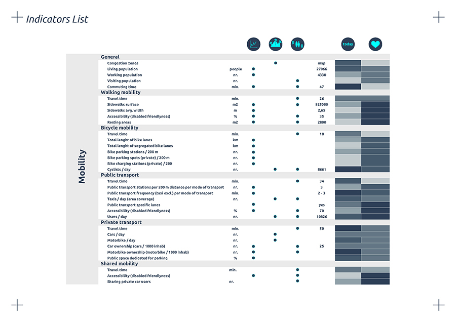
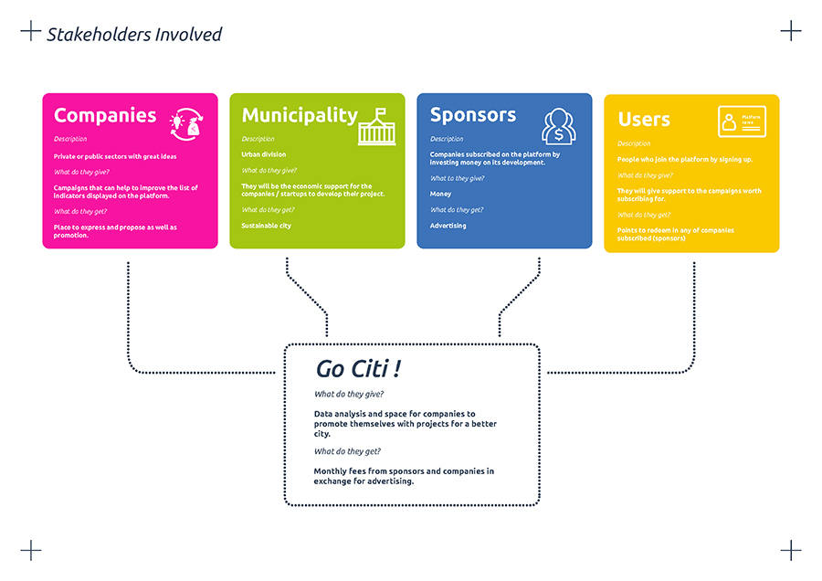
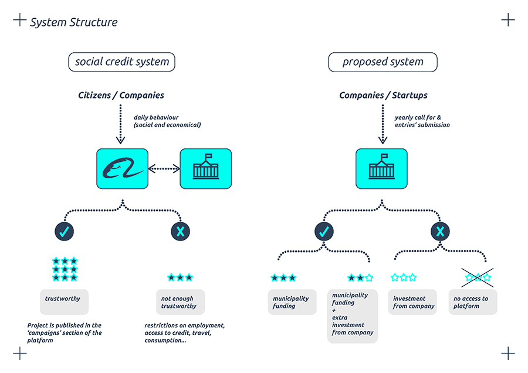
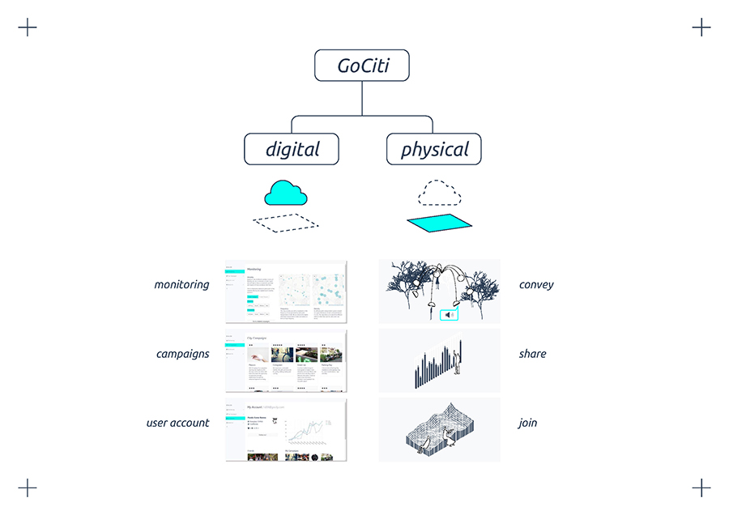
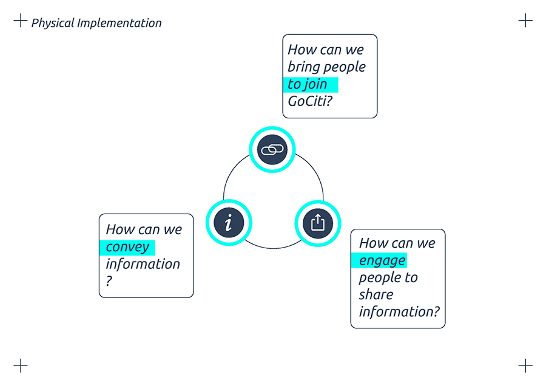
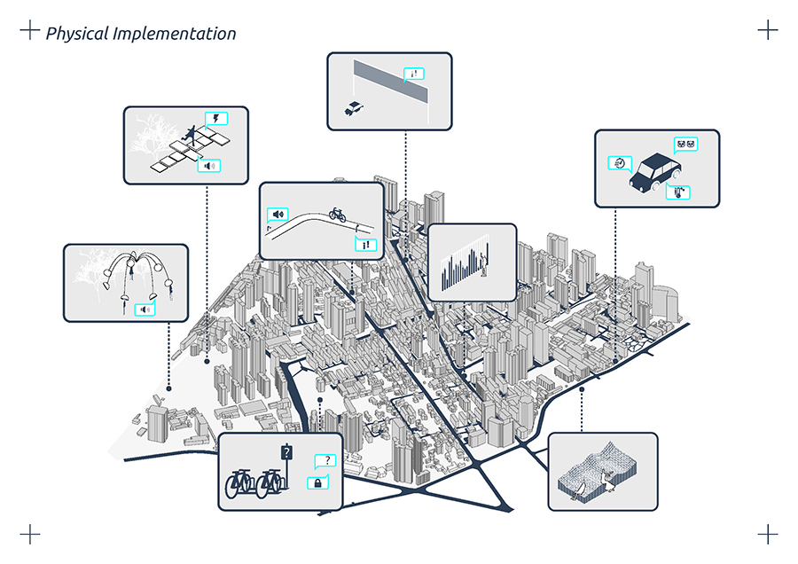
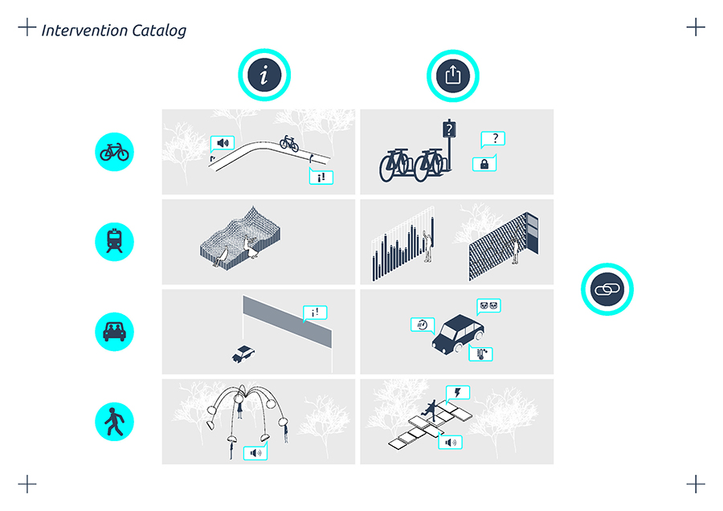
GoCiti! app is a project of IAAC, Institute for Advanced Architecture of Catalonia, developed at MaCT (Master in City & Technology), 2017-18
By students: Irene Rodríguez Vara, Najla Aldah, Alba Alsina Maqueda
And faculty: Francesca Arcuri, Dr.Kathrin DiPaola, Christian Gärtner, Alex Mademochoritis, Frederico Parolotto, Sebastiano Scacchetti, Julius Streifeneder